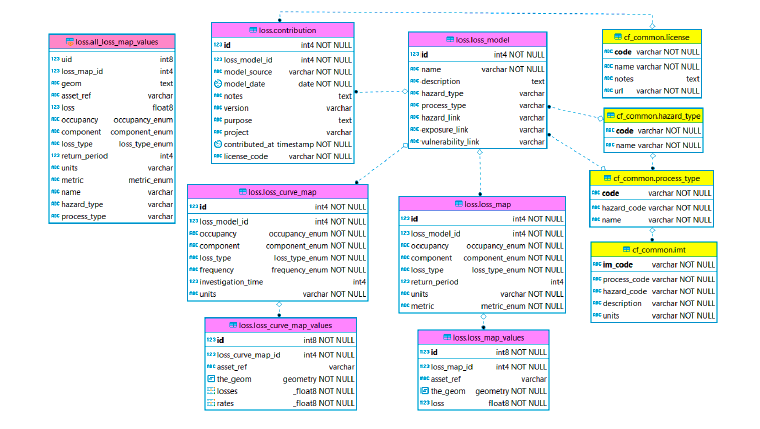

Loss DB schema
The modelled loss schema enables return period loss estimates and annual average loss to be stored and linked to a geographic unit. Loss datasets can be directly linked to the hazard, exposure, and vulnerability datasets which were used to create the modelled losses via fields in loss.model. The dataset also summarises the exposure and hazard types to which the losses relate, independent of those links.
Enumerated types provide consistent categories for referencing losses as: - Category: Buildings, Contents, Direct Damage to other Asset, or Business Interruption - Frequency: Return Period, Probability of exceedance, or Rate of exceedance - Loss type: Ground Up (economic) or Insured - Metric: Annual average loss, Annual average loss ratio, or Probable maximum loss.
Each model has any number of loss maps which in turn have any number of geospatially referenced loss values. The meta-data in the loss map table describes the type of losses, occupancy, return period, metric used and so on. Similarly, a model can also have any number of loss curve maps, with any number of geospatially referenced loss curve value arrays. The associated loss and loss curve values may optionally include an asset reference to link to elements from an exposure model.

ERD (modeled loss schema): loss table contents (violet) and links to common tables (yellow). The schema includes a SQL view (pink).Table: loss.model
Each entry in this table represents a single loss model, describing the hazard and process, and data used to generate the losses.
| Req | Field name | Type | Reference table | Description |
|---|---|---|---|---|
| * | id | INT | Unique number ID | |
| * | name | VARCHAR | loss.model | Name of source model |
| description | TEXT | Description of source model | ||
| hazard_type | VARCHAR | hazard.hazard_type | 2-digit code | |
| process_type | VARCHAR | hazard.process_type | 3-digit code | |
| hazard_link | VARCHAR | |||
| exposure_link | VARCHAR | |||
| vulnerability_link | VARCHAR |
Table: loss.map
Each entry in this table represents a collection of loss values with unit and loss type and metric, for a given occupancy type, return period and loss component (building, contents) produced by a loss model. Loss exceedance curves are contained elsewhere, in loss.curve_map.
| Req | Field name | Type | Reference table | Description |
|---|---|---|---|---|
| * | id | INT | Unique number ID | |
| * | loss_model_id | INT | loss.model | Unique number ID of source loss model |
| * | occupancy | cf_common.occupancy_enum | Destination of use of the asset | |
| * | component | loss.component_enum | Type of affected component (e.g. buildings) | |
| * | loss_type | loss.loss_type_enum | Type of loss (e.g. ground-up) | |
| return_period | INT | Number of return period in years | ||
| * | units | VARCHAR | Cost unit of measure | |
| * | metric | loss.metric_enum | Type of loss metric (e.g. AAL) |
Table: loss.map_values
Each entry in this table represents the loss value and location of the value, with the value relating to the information in loss.map.
| Req | Field name | Type | Reference table | Description |
|---|---|---|---|---|
| * | id | BIGINT | Unique number ID | |
| * | loss_map_id | INT | loss.map | Unique number ID of reference loss map |
| asset_ref | VARCHAR | Alphanumeric code that identifies asset from exposure model | ||
| * | loss | FLOAT | Loss value in the unit specified in loss_map | |
| * | the_geom | GEOM | Associated geometry |
Table: loss.curve_map
Each entry in this table represents a collection of loss exceedance curves associated with the loss model. It describes the unit, type and metric of the loss, which is provided for a given occupancy type, and loss component (building, contents) produced by a loss model.
| Req | Field name | Type | Reference table | Description |
|---|---|---|---|---|
| * | id | INT | Unique number ID | |
| * | loss_model_id | INT | loss.model | Unique number ID of reference loss model |
| * | occupancy | cf_common.occupancy_enum | Destination of use of the asset | |
| * | component | loss.component_enum | Component affected by loss | |
| * | loss_type | loss.loss_type_enum | Type of loss | |
| * | frequency | loss.frequency_enum | Frequency representation type | |
| investigation_time | INT | Investigation time in years (required if frequency is different from 'Return Period') | ||
| * | units | VARCHAR | Unit of measure of loss (e.g. USD, tons, etc) |
Table: loss.curve_map_values
Each entry in this table provides the values for a loss esceedance curve and location to which the curve relates, with the value relating to the information in loss.curve_map.
| Req | Field name | Type | Reference table | Description |
|---|---|---|---|---|
| * | id | BIGINT | Unique number ID | |
| * | loss_curve_map_id | INT | loss.map | Unique number ID of reference loss curve map |
| asset_ref | VARCHAR | Alphanumeric code that identifies asset from exposure model | ||
| * | losses | VARCHAR | Loss values in the unit specified in loss_curve_map | |
| * | rates | FLOAT | Rate values associates with losses | |
| * | the_geom | GEOM | Associated geometry |
Types
Includes 4 types including the options for asset categories to which loss refers to, how the frequency is expressed, what is the metric in use and the types of losses.
| ENUM name | Types | Description |
|---|---|---|
| Category_enum |
|
Types of possible asset categories, consistent with the exposure schema. Indicators refers for example to population density or GDP; infrastructure refers for example to roads, or electricity grid. |
| frequency_enum |
|
How the frequency value reported in loss.curve_map is expressed. |
| metric_enum |
|
Type of loss metric used in loss.curve_map and loss.map Note: AAL = Annual Average Losses AALR = Average Annual Loss Ratio PML = Probable Maximal Loss (also known as Return Period Loss) |
| loss_type_enum |
|
Type of losses in loss.curve_map and loss.map. |